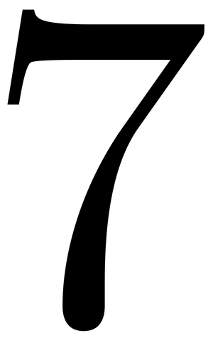

ⲥⲃⲉ A v ϣϥⲉ.
(numeral male)
number
seven [επτα]

1: seven
complete
| ⲙⲛⲧⲥⲁϣϥ, ϫⲟⲩⲧⲥⲁϣϥ | seventeen, twenty-seven &c2081 | Crum: 378a | |||||||
| ϣϥⲉ, ϣⲃⲉ, ⲥϣϥⲉ S
ⳉⲃⲉ, ⲥⳉⲃⲉ, ⲥⲃⲉ A ϣⲃⲏ F |
(numeral male/female)seventy2082 | ||||||||
321b
378a
379b
551a
608a
609b
610b
628a
378a
ⲥⲁϣϥ SA2, -ⳉϥ A, ⲥⲉϣϥ S (R 1 1 49), ϣⲁϣϥ B (K 67), ϣⲉϣⲃ F, f ⲥⲁϣϥⲉ SA2, -ϩⲃⲉ Sa, -ϩϥⲉ A2, -ⳉϥⲉ A, ⲥⲁⲥⲫⲉ, -ⲓ O nn, seven (BF mostly ⲍ̅ m f, not ⲍ̅ϯ), as nn: 2 Kg 21 9, Eccl 11 2, Mk 12 23 ἑπτά; Wess 15 134 ⲛⲥⲁⲃⲗⲗⲁⲛ ⲙⲡⲥ., Win 1 ⲡⲥ. ⲙⲡϣⲁ 7th (day) of festival, Ge 29 27 ⲧⲥ., PGM 1 114 O ⲛⲓⲥ.; as adj, before nn m: 1 Kg 2 5, Pro 6 31 SA, Ap 5 6; CMSS 49 F ϣ. ⲉⲛⲗⲉⲙⲧⲟϭⲉ; f: Ge 5 7, Ex 2 16 SA, Ap 5 1, PS 3 ⲧⲥ. ⲛⲫⲱⲛⲏ, PGol 47 A2 ⲧⲥ. ⲛⲡⲗⲏⲅⲏ, KroppB ⲥⲁϣϥ(ⲉ) ⲙⲡⲁⲣⲑⲉⲛⲟⲥ; after nn: Jo 4 52 SA, Bor 168 151 S ϫⲡ ⲥ.; iterated (distributive): P 12916 68 ⲥ. ⲥ. ⲕⲁⲧⲁ ⲛⲉⲏⲅⲉⲛⲟⲥ (cf Ge 7 2); seventeen, twenty-seven &c: ⲙⲛⲧⲥⲁϣϥ Ge 8 4, ⲙ. ⲥⲁϣϥⲉ 4 Kg 13 1, ⲙ. ⲥⲁϥⲃⲉ ⲛⲥⲟⲡ KroppK 13, ϫⲟⲩⲧⲥⲁϣϥ Ge 7 11, ϫ. ⲥⲁϩⲃⲉ Ep 537, ⲙⲁⲁⲃⲥⲁϣϥ 2 Kg 23 39, ⲙ. ⲥⲁⳉⲃⲉ A Ex 6 16, ⲧⲁⲓⲟⲩ ⲥⲁϣϥ Nu 1 29. Ordinals: Hag 2 1 A ⲙⲁϩⲥ., Ap 10 7 ⲙⲉϩⲥ., Mani 2 A2 ⲙⲁϩⲥ., 4 Kg 16 1 ⲧⲙⲉϩⲙⲛⲧⲥⲁϣϥⲉ; PS 73 ⲡⲙⲉϩϩⲙⲉⲛⲉ ⲥⲁϣϥⲉ.
ϣϥⲉ1, ϣⲃⲉ2, ⲥϣϥⲉ3 S, ⳉⲃⲉ4, ⲥⳉ.5, ⲥⲃⲉ (Ex 1 5) A, ϣⲃⲏ F m f, seventy (B ⲟ̅): Ge 4 242, Ac 7 14 ϣ.1 ⲧⲏ, BMis 570 ⲥ.3 ⲥⲛⲟⲟⲩⲥ, Zech 7 54, ib 1 125, BMar 66 S ⲥϣⲉ (sic) ⲛⲣⲟⲙⲡⲉ; PS 58 ⲙⲉϩϣ.1, Lange in Griff Stu F ⲡⲓϣⲃⲏ ⲛⲟⲩϯ.
379b
ⲥⳉⲃⲉ A v ⲥⲁϣϥ (ϣϥⲉ).
ⲥⲁⳉϥ A v ⲥⲁϣϥ.
551a
ϣⲃⲉ, ϣϥⲉ, seventy v ⲥⲁϣϥ.
608a
ϣⲉϣⲃ F v ⲥⲁϣϥ.
609b
ϣⲁϣϥ B v ⲥⲁϣϥ & ϣⲱϣ twist.
610b
ϣϥⲉ, ϣⲃⲉ S, ϣⲃⲏ F v ⲥⲁϣϥ, adding ϣⲃⲉ A2 Mani H 68.
628a
ⳉⲃⲉ v ⲥⲁϣϥ (ϣϥⲉ).
See also:
| view | ⲟⲩⲁ S ⲟⲩⲉ SfALFO ⲟⲩⲉⲉ, ⲟⲩⲉⲓ LF ⲟⲩⲉⲉⲓ LF ⲟⲩⲁⲓ BO ⲟⲩⲁⲓⲉⲓ F female: ⲟⲩ(ⲉ)ⲓ SBF female: ⲟⲩⲉⲓⲁ S female: ⲟⲩ(ⲉ)ⲓⲉ SAL female: ⲟⲩⲓ B | (numeral) one, someone [εις, τις, ετερος]68 |
| view | ⲥⲛⲁⲩ SAB ⲥⲛⲁⲁⲩ S ⲥⲛⲉⲩ ALB ⲥⲛⲟ A ⲥⲛⲱ Sa ⲥⲛⲉⲟⲩ SaFO ⲥⲛⲛⲉⲟⲩ, ⲥⲛⲟⲩ Sa ⲥⲛⲁⲟⲩ O female: ⲥⲛⲧⲉ SA female: ⲥⲛⲟⲩⲧⲉ Sf female: ⲥⲛⲟⲩϯ BF female: ⲥⲏⲛϯ F | (numeral) two
― as noun [δυο] ― as adj ―― before nn ―― after nn119 |
| view | ϣⲟⲙⲛⲧ, ϣ(ⲉ)ⲙⲛⲧ S ϣⲟⲙⲧ SB ϣⲁⲙⲉⲛⲧ Sf ϣⲁⲙⲛⲧ SaL ⳉⲁⲙⲧ A ϣⲁⲙⲧ LF ϣⲙⲧ- SL ϣ(ⲉ)ⲙⲛⲧ- S ⳉⲛⲧ-, ⳉⲛⲧⲉ- A female: ϣⲟⲙⲧⲉ SO female: ϣⲟⲙⲛⲧⲉ S female: ⳉⲁⲙⲧⲉ A female: ϣⲁⲙⲧⲉ, ϩⲟⲙⲧⲉ L female: ϣⲟⲙϯ B | (numeral) three [τρεις]
thirteen132 |
| view | ϥⲧⲟⲟⲩ SB ⲃⲧⲟⲟⲩ S ϥⲧⲁⲩ AL female: ϥⲧⲟⲉ SAL female: ϥⲧⲟ SLB female: ⲃⲧⲟ S female: ⲃⲧⲁ F female: ϥⲧⲟⲩ- SALB female: ϥⲧⲟⲟⲩ-, ϥⲧⲉⲩ- S female: ϥⲧⲉ- B female: ϥⲧⲁⲩ- F | (numeral) four [τετρας]2064 |
| view | ϯⲟⲩ SALF ⲧⲓⲟⲩ B female: ϯⲉ SALF female: ϯ SA | (numeral) five [πεντε]
ⲧⲏ in fifteen, twenty-five &c1664 |
| view | ⲥⲟⲟⲩ SB ⲥⲁⲩ SaALF ⲥⲉⲩ- S female: ⲥⲟ, ⲥⲟⲉ, ⲥⲟⲟⲩⲉ S female: ⲥⲱⲉ A female: ⲥⲟⲉ L female: ⲥⲁ F | (numeral male) six [εξ]1508 |
| view | ϣⲙⲟⲩⲛ SLF ⳉⲙⲟⲩⲛ A ϣⲙⲏⲛ B female: ϣⲙⲟⲩⲛⲉ S female: ϣⲙⲟⲩⲛⲓ F female: ϣⲙⲏⲛⲓ B | (numeral male) eight [οκτω]916 |
| view | male: ⲯⲓⲥ SA male: ⲯⲓⲧ SB female: ⲯⲓⲧⲉ SL female: ⲯⲓⲥⲉ S ⲑ̅ BF female: ⲑ̅ϯ B | (numeral) nine1291 |
| view | ⲙⲏⲧ SALB female: ⲙⲏⲧⲉ S ⲙⲏϯ B ⲙⲛⲧ- SAL ⲙⲉⲧ-, ⲙⲛⲧ- B | (numeral) ten
― ordinals ― ⲙⲛⲧ-, ⲙⲉⲧ-, (eleven to nineteen) ― ordinals with ⲙⲉϩ-1112 |
| view | ϫⲟⲩⲱⲧ SAF ϫⲱⲧ B ϫⲟⲩⲧ- SSaALF ϫⲟⲩⲱⲧ-, ϫⲁⲩⲱⲧ- S ϫⲱⲧ- S ϫⲟⲧ- SF female: ϫⲟⲩⲱⲧⲉ SLF female: ϫⲟⲩⲟⲩⲱⲧⲉ SL | (numeral) twenty [εικοσι]2473 |
| view | ⲙⲁⲁⲃ SL ⲙⲁⲁⲃⲉ, ⲙⲁⲃⲉ A ⲙⲁⲡ B ⲙⲏⲃ F female: ⲙⲁⲁⲃⲉ S ⲙⲁⲁⲃ-, ⲙⲁⲃ- SL ⲙⲁⲡ- B | (numeral) thirty1045 |
| view | ϩⲙⲉ SALB ϩⲙⲏ Sf ϩⲙ B | (numeral male/female) forty957 |
| view | ϣⲉ SALBO ϣⲏ SfF | (numeral) hundred [εκατον]1848 |
| view | ϣⲟ SLB ⳉⲟ A ϣⲁ SfF | (numeral) thousand [χιλιοι, χιλιας]164 |
| view | ⲧⲃⲁ SAL ⲑⲃⲁ B ⲧⲃⲉ F | (numeral male) ten thousand [μυριας]165 |